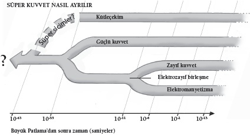

Evreni bir arada tutan bağlar ve süperkuvvetteki kökenleri
Doğrudan Hollywood’dan çıkmış bir sorudur bu. İki heybetli, ama birbirinden çok farklı hayvanı alın, birbirlerinin üzerine salın. Alien’a karşı Predator’ı, King Kong’a karşı Godzilla’yı gördük; Kütleçekim’e karşı Güçlü Kuvvet’e ne dersiniz? Ya da Zayıf Nükleer Kuvvet’e karşı Elektromanyetizma’ya? Bu tür soruların cevaplarının ulaşılamaz olduğunu duymak sizi şaşırtmayacaktır. Gelgelelim bunun sebebini şaşırtıcı bulabilirsiniz.
Fizikçilerin kuşkuları haklıysa dört kuvvetle değil bir kuvvetle uğraşıyoruz. Becerikli bir kuklacının bir kukladan fazlasını oynatabilmesinde olduğu gibi, öyle görünüyor ki doğanın farklı kuvvetleri olarak gördüğümüz şeyin arkasında bir tek süperkuvvet var. Kütleçekimin, elektromanyetizmanın, güçlü ve zayıf nükleer kuvvetlerin birleşik halde olması söz konusu olabilir.
Newton, büyük eseri Philosophiae Naturalis Principia Mathematica’nın önsözünde, bütün doğa olaylarının, “cisimlerin parçacıklarını, o zamana kadar bilinmeyen bazı sebeplerden ötürü ya birbirine doğru çekip düzenli şekiller halinde birleştiren ya da itip birbirinden uzaklaştıran belli kuvvetlere dayandığı” yolunda derin bir şüphe beslediğini yazmıştı. Başka bir deyişle, fiziğin özünü doğadaki kuvvetlerin oluşturmasından kuşkulanıyordu.
Bu fikir, ondan önce gelen fikirlerle çarpıcı bir tezat gösterir. Yunanlıların bilimsel araştırma tarzı, bir “ilk hareket ettiricinin”, adalet ve ahlak mefhumlarına da hükmeden nihai bir etkenin rolünü varsaymak ve bu role saygı duymaktı. Doğa olaylarının arkasında ilişkili oldukları etik ve ahlaki boyutları araştırmaksızın sırf fiziksel mekanizmalar aramak gibi bir şey yapılmıyordu. Fakat artık fizik kuvvetlerinin herkes için geçerli olduğunu, ahlaki açıdan hiçbir şey ifade etmediğini biliyoruz. Matta İncili’nin diliyle söyleyecek olursak kütleçekim “adil olanın üzerine de olmayanın üzerine de yağmur yağdırdı.”
Ama kuvvetlerin hepsi de bu kadar kapsayıcı değildir. Örneğin elektromanyetik kuvvet yalnızca elektrik yükü taşıyan parçacıklar arasında etkilidir. Güçlü kuvvet yalnızca kısa bir mesafede ve çekirdekteki parçacıklar arasında etkilidir. Bu bir soru doğurur. Bütün kuvvetler bu kadar farklıysa neden hepsinin aynı kökenden geldiğine inanıyoruz? Bu soruyu cevaplayabilmek için önce kütleçekimle ilgili fikirlerimizi ve nerelerde yetersiz kaldıklarını incelememiz gerekir.
Kütleçekimin Ehlileştirilmesi
Kuvvetlerin en zayıfı olan kütleçekim ilk ehlileştirilen kuvvet olmuştur. Newton ilk hamleyi evrensel kütleçekim kanunuyla yapmış, kütleye sahip olan cisimlerin nasıl bir etkileşim içinde olacağını betimleyen bir formül sunmuştur. Newton’ın çizdiği şemaya göre, kütleçekimin çekim gücü gezegenlerin hareketlerini, şaşırtıcı derecede doğru bir biçimde açıklıyordu. Gelgelelim Newton’ın kütleçekimle ilgili fikirleri iki bakımdan yetersiz kalıyordu. Birincisi, kütleçekimle ilgili bir betimleme sunuyor; ama kütleçekime bir açıklama getirmiyorlardı. İkincisi, kütleçekimin evrende nasıl işlediğini her yönüyle betimlemiyorlardı: Bazı olaylar açıklanmaya gelmiyordu.
Herhalde buna verilebilecek en meşhur örnek Merkür’ün perihelionunun gerilemesidir. Perihelion, eliptik bir yörüngede, yörüngesinde olunan şeye en yaklaşılan noktadır. Merkür’ün Güneş’in etrafındaki yolculuğunda da birbirini izleyen yörüngelerde değişen, yani gerileyen böyle bir nokta vardır. Gerileme, güneş sistemindeki başka gezegenlerin kütleçekim güçlerinin bir sonucudur; 1845’te Fransız astronom Urbain Joseph Le Verrier Newton kanununu kullanarak bunun ne olduğunu bulmaya çalışmıştı. Görünüşe bakılırsa bir hata vardı. Le Verrier’nin hesaplaması gözlenen gerilemeyi, bir yüzyıllık yayda 43 saniyeyle kaçırmıştı. Her yüzyılda bir hesaplamalar, bir derecenin sadece yüzde biri kadar hata veriyordu; ama hatalıydılar işte.
Talihe bakın ki Einstein’ın genel görelilik kuramı gerekli düzeltmenin yapılmasını sağladı. Görelilik kuramı, kütleçekim alanlarının kütle ile enerjinin evrenin dokusu üzerindeki etkilerinden doğduğunu söyler; kütleçekim uzay-zamanın bükülmesinden kaynaklanır. Görelilik kuramı şaşırtıcı derecede başarılı bir kuramdır, aşamadığı deneysel bir test olmamıştır. Yine de görelilik kuramının evrende gördüklerimizi betimlemekteki büyük başarısına rağmen, kütleçekimin nedenine ve nasılına ilişkin uygun bir açıklama ele geçmezliğini korumaktadır. Elimizde böyle bir açıklama olana dek, kütleçekimin aslında bu kadar zayıf olduğundan emin olamayız; özellikle de bilime yenik düşen bir sonraki kuvveti incelediğimizde.
Yüklü ve Hazır
Elektromanyetizma kütleçekimden çok daha güçlü bir kuvvettir. İki elektron alın: Aralarındaki elektromanyetik itme kütleçekimden kaynaklanan karşılıklı çekimlerinden 1043 kat daha güçlüdür. Fakat bu göreli güç bir yanılsama olabilir. İpucu, elektromanyetizmanın iki kuramın birleşimi olmasında yatmaktadır: Elektrik ve manyetizma.
1840’larda İngiliz fizikçi Michael Faraday demir dolguların bir mıknatısın etrafına saçıldıklarında neden doğrular oluşturduğunu açıklamak üzere bir alan kavramını ortaya attı. Faraday’e göre bu “kuvvet hatları” mıknatısın etrafındaki uzamın bazı fiziksel özellikleriyle ilişkiliydi. Bu alanla elektrik arasındaki bağlantı da kolayca kuruldu: Faraday, değişen bir manyetik alanın bir elektrik alanı yarattığını da keşfetti.
Fakat bir karışıklık vardı. Faraday’in dostu James Clark Maxwell, Faraday’in keşiflerini ve bunları betimleyen denklemleri bir araya getirmeye çalıştığında, sonucu, ancak bu bileşime bir etken daha eklediğinde anlamlı kılmayı başardı. Manyetik alanları değiştirmek elektrik alanları yaratmakla kalmıyordu. Tersi de geçerli olmalıydı: Maxwell elektrik alanlarını değiştirmenin de manyetik alanlar yaratacağını söylüyordu.
Maxwell’in yeni denklemleri güzel bir tutarlılıkla ışıldıyordu: Elektrik ve manyetizma aynı madalyonun iki yüzüydü. Bu birleşme başka bir güzel sonuca yol açmıştı. Maxwell manyetik bir alanı değiştirmenin bir elektrik alanı yaratmasına, bu elektrik alanın bir manyetik alan yaratmasına, bunun sonsuza dek böyle devam edip gitmesine baktığında, elektromanyetik ışımanın kökenini keşfettiğini fark etti. Dahası bu karışıklığın yayılma hızı ışık hızıyla aynıydı. Böylece ışığın elektromanyetik bir dalga olduğu derhal açıklık kazanmış oldu.
Bu keşfin önemini abartmamak zordur. Bu keşif, elektromanyetik tayfın, radyo dalgalarının ve gama ışınlarının, arada kalan her şeyin keşfedilmesini sağladı. Enerjinin uzayda bir noktadan diğerine nasıl aktarılabileceğini gösterdi; hiçbir fiziksel kaynağı olmayan bazı hayali etkileşimlerle ilgili fikirleri bertaraf etti. Herhalde en önemlisi de fizikte kısa süre sonra gelecek bir devrime zemin hazırlaması oldu. Işınım kaynağı gözlemciye göre hareket halinde olduğunda Maxwell’in denklemleri işe yaramıyordu; bu gözlem Einstein’ı bu anormalliği çözmeye yöneltti ve 1905’te özel görelilik kuramı geldi (bkz. Zaman Nedir?). Dahası elektrik ile manyetizmanın birleşmesi yalnızca başlangıçtı. Artık doğanın bir başka kuvvetinin de aynı elden çıktığını biliyoruz.
Einstein’ın Yumuşak Karnı
Birleşme fikri Einstein’ı çok güçlü bir biçimde harekete geçirmişti. Görelilik kuramının başarısının ardından Einstein ömrünü tıpkı kütleçekimle ilgili olarak yaptığı gibi, elektromanyetizmayı uzay-zaman geometrisinden çekip çıkaracak “birleşik bir alan kuramı” inşa etmeye çalışmakla geçirdi. Sonuçta o ve az sayıdaki takipçisi kuantum kuramının gelişimini görmezden geldiler. Einstein kuantum kuramını hiç sevmedi, kaybolup gitmesini umuyordu.
Ama öyle olmadı ve bu yeni kuramın araştırmaları, parçacık fiziğinin savaş sonrasındaki hızlı gelişimiyle birlikte iki yeni kuvvetin varlığına işaret etti: güçlü ve zayıf nükleer kuvvetler. Einstein bu kuvvetlerle hiç uğraşmamış, yalnızca elektromanyetizma ve kütleçekimle oynamayı sürdürmüştü. 1955’te öldüğünde, fizik onsuz ilerlemiş bulunuyordu.
Bu utanç vericidir; çünkü bugün çekirdekteki parçacıklar –nötron ve proton – arasında etkili olan ve 10-17 metre gibi son derece kısa bir etki aralığı olan zayıf nükleer kuvvetin elektromanyetik kuvvetle yakından ilgili olduğunu biliyoruz. Bunu biliyoruz; çünkü “beta” ışınımın gerisinde zayıf kuvvet vardır; beta ışınımında bir atom bir elektron ya da elektronun pozitif yüklü karşıt parçacığı olan pozitron salar. Beta ışınımıyla bir elektronun salınması bir nötronun bir protona dönmesini gerektirir; bu ancak zayıf kuvvetin kaynağı olan “W bozonu” en başta salınırsa gerçekleşir: Daha sonra çürüyüp elektron oluşturan parçacık W bozonudur.
Zayıf kuvvet ile elektromanyetik kuvvetin, fizikçilerin “kendiliğinden simetri kırılması” olarak bildiği aynı sürecin sonucu olduğunu fark etmemiz, aradaki bağlantıyı daha da güçlendirmiştir. Bu durum biraz, birbirine yabancı insanlardan oluşan bir kalabalığı bir odada topladığınızda olup bitenleri andırır. Yabancılar kendi aralarında konuştukça, bazıları bir alanda, bazıları bir başka alanda ortak noktaları olduğunu anlayacak, yeterince zaman tanındığında farklı şeylerden konuşan farklı gruplar oluşturacaklardır. Başta, “simetri” vardır: Yabancıları birbirinden ayırmanızı, gruplandırmanızı sağlayacak hiçbir şey yoktur. Ama onlar konuştukça, bu simetri kendiliğinden kırılır ve gruplar oluşur.
Steven Weinberg, Sheldon Glashow ve Abdus Salaam 1960’larda aynı kendiliğinden simetri kırılma sürecinin, başka bir kuvvetten elektromanyetik kuvvet ile zayıf kuvveti yarattığı göstermiştir. Onlar bu kuvvete “elektrozayıf kuvvet” demişler ve bu kuvvetin, parçalanmamış bir biçimde evrenin başlangıcındaki yüksek enerji koşullarında var olduğunu ileri sürmüşlerdir. Bu çalışma bir başyapıttır ve üçlüye 1979 Nobel Fizik Ödülü’nü kazandırmıştır. Kuram özgün kuramsal öngörülerde bulunuyordu: W ve Z bozonlarının varlığı gibi ve bunlar da varsayılan bütün özellikleriyle birlikte 1983’te bulundu.
Fakat belki de en önemlisi, bu atılım, zayıf kuvvet kısa mesafelerde elektrik yükü olmayan nötronlar üzerinde, elektromanyetik kuvvet ise muazzam mesafelerde ve elektrik yüklü parçacıklar üzerinde etkili olsa da görünürde birbirinden farklı olan kuvvetlerin esas itibarıyla o kadar da farklı olmadığı anlamına geliyordu. Aslına bakarsanız, hangi kuvvetin en güçlü kuvvet olduğunu söyleyememeyi bir kenara bırakın, kendimizi birden şok edici bir soruyla karşı karşıya bulduk.
Elektromanyetik kuvvet ve zayıf kuvvet bir zamanlar aynı kuvvet idiyseler kendiliğinden simetri kırılmasının doğadaki bütün kuvvetlere yol açmadığını kim söyleyebilirdi? Muhtemelen bütün kuvvetler tek bir kadim kuvvetin tezahürü olduğu için kuvvetlerden birinin en güçlü kuvvet olduğunu söyleyemiyorduk. Bu olasılığı araştırmak için geride kalan unsuru değerlendirmemiz gerekiyordu: Güçlü nükleer kuvveti.
Nükleer Bağ
Tıpkı, beta-çürümenin açıklanabilmesi için zayıf kuvvetin mevcut olmasının gerekmesi gibi, çekirdekteki protonlar arasındaki karşılıklı itiş güçlü kuvveti zorunlu kılmaktadır, aksi takdirde çekirdek bir arada tutulamazdı. “Güçlü” bu kuvvet için uygun bir isimdir: Öyle görünüyor ki bu kuvvet, çekirdeği parçalayabilecek güçte olan elektromanyetik kuvvetten yüz kat daha güçlüdür. Gelgelelim güçlü kuvvetin gücünü ölçmek, onu ehlileştirmenin kolay kısmıydı: Bu kuvvetin varlığını açıklamak çok daha zordu. Atom çekirdeğinin bir arada durabilmesinin tek sebebinin böyle muazzam bir kuvvet olduğunu bilmek yetmez. Bu kuvveti yaratan nedir?
Bu güçlü kuvvetin ardındaki fikirler 1970’lerin başında geliştirilmiştir. Kuarkların atom çekirdeğindeki nötronlar ve protonları oluşturduğu biliniyordu. Her kuarkın belirgin bir niteliği vardır, fizikçiler buna o kuarkın rengi der. Bu yüzden güçlü kuvveti kuarklara bağlayan kurama “kuantum kromodinamiği”, yani QCD denmiştir. QCD’ye göre güçlü kuvvet kuarkları birbirine, elektromanyetik ve kütleçekim kuvvetlerinin tersine mesafenin artmasıyla birlikte azalmayan bir etkileşimle bağlar. Kuarklar birbirinden uzaklaşırken sanki bir zemberekle birbirlerine bağlıymışlar gibi bu kuvvet güçlenir.
QCD denklemlerinde ortaya çıkan bu tuhaf özellik, güçlü kuvvete, nerede bulunurlarsa bulunsunlar kuarkları birbirine bağlama gücü verir. Birçok araştırmaya rağmen, tek başına dolanan bir kuark bulamamış olmamız, bu özelliğin doğasını yansıtır. QCD güçlü kuvvetin glüon diye bilinen bir bozon tarafından yaratıldığını söyler. Glüonlar ilk kez 1979’da yapılan deneylerde görülmüştür. Fakat bu kuram o tarihe gelindiğinde zaten sağlam bir dayanağa sahip bulunuyordu: Kuarklar, öngörülen niteliklere sahip olarak 1960’ların sonunda ve 1970’lerin başında parçacık hızlandırıcılarda tespit edilmeye başladığında QCD de kanıtlanmış bir kuram sayılmıştı.
Fakat fizikçileri asıl heyecanlandıran QCD’nin elektrozayıf kuvvetle aynı simetri kırılma fikrine dayanarak kurulmuş olmasıydı. Maddenin davranışına ilişkin tek bir tanım içinde, “büyük birleşik kuram” çerçevesinde birbirleriyle yakından ilişkili olarak bir araya getirilebilir olmaları tümüyle akla yatkın görünüyordu. Bu arayışın sönmeye yüz tuttuğu nokta da burası oldu. Otuz yıl süren araştırmaların ardından güçlü kuvvetin gerçekten elektrozayıf kuvvetle aynı ekipten olup olmadığına hâlâ emin değiliz.
Birleşme Yolunda Mücadele
Sorun şudur ki birleşme doğrudan olmaktan çok uzaktır. Birleşme için, birbirine yabancı insanların bir odada toplanması senaryosunda olduğu gibi başka bir simetri gerekmektedir; fakat bu kez yabancıların sayısı daha da fazladır. Bu birbirinden farkı olmayan yabancıların bir şekilde kendiliğinden ayrılıp beş farklı tipte parçacığı –farklı renkte üç kuark, elektron ve onunla ilişkili nötrino– ve üç kuvveti tanımlıyor olması gerekmektedir.
Birleşmeyi Dünya üzerinde yeniden yaratmak neredeyse imkânsızdır: Bu simetri kırılmasının enerjisine ulaşmak, en güçlü atom çarpıştırıcımız olan Büyük Hadron Çarpıştırıcısı’ndan 100 milyar kat daha güçlü parçacık hızlandırıcılarının varlığını gerektirmektedir. Gelgelelim bu fikri sınamanın başka yolları vardır. Bütün büyük birleşik kuramlara göre, kuarkların değişip elektron ve nötrino oluşturabiliyor olmaları gerekir, fizikçilerin bu büyük kuram için en iyi görünen adayları (ortaya çıkardığı beş parçacık yüzünden SU(5) olarak bilinir) da böyle bir sürece sahiptir. Bu kuram protonun bir tür radyoaktif çürümeye girdiğini söyler ve bunun ne sıklıkla gerçekleşeceğine dair bir öngörüde bulunur.
Fakat kuramın yaptığı tahminin çok yanlış çıkması utanç vericidir. Kuram bir protonun çürümeden evvel yaklaşık 1033 yıl yaşayacağını söyler. Yaklaşık çeyrek yüzyıl önce, fizikçiler son derece arındırılmış suyla dolu devasa tanklar inşa ettiler; tanklar böyle bir olayın gerçekleşmesini kayıt altına alacak cihazlarla çevriliydi. Kurama ve tanklarda bulunan proton sayısına bağlı olarak her yıl birkaç çürüme gerçekleşmesi bekleniyordu. Gelgelelim şimdiye kadar fizikçiler hiçbir şey görmemişlerdir. Fakat bir şansımız daha var ve bu Büyük Hadron Çarpıştırıcısı’nda gözlenebilir. Bu şansa “süpersimetri” deniyor.
SUSY Sesleniyor
Süpersimetri fizikçilerin parçacıkları iki gruba ayırmasından kaynaklanır: Elektronlar ve kuarklar gibi, maddeyi oluşturan parçacıklara fermiyonlar denir; foton ve glüon gibi kuvvetleri oluşturan parçacıklara da bozon denir. İki farklı tipteki bu parçacıklar, iki farklı kurallar dizisini izler. Süpersimetri (supersymmetry) yani SUSY de her bir parçacığın diğer grupta herhangi bir deneyde aynı biçimde davranacak bir “süper eşi” olduğunu söyler.
Bu mümkündür; çünkü fermiyonlar ile bozonlar arasındaki temel farklılık spin olarak bilinen kuantum özelliğinden doğar. Bozonların spini tam sayıdır –1, 2, 3 vb.– fermiyonların spini ise tam sayıların yarısıdır: ½, 3/2 vb. SUSY, bakış açısında bir değişimi gerektirir: Bir saate önden ya da arkadan bakmak gibi bir değişimi. Bakış açısındaki bu değişiklik kuantum spinini değiştirir (tıpkı arkadan bakıldığında saatin kollarının dönüşünün farklı bir biçimde anlaşılmasında olduğu gibi); fakat elektrik yükü ya da kuarkın rengi gibi başka şeyleri değiştirmez.
Bu kulağa, uygunluk sağlamaya yönelik bir kurgu gibi gelebilir; fakat fizikte en iyi fikirler arasında yer alan son derece saygın bir düşünme biçimidir. Gelgelelim tabii ki can alıcı soru, bunun doğru olup olmadığıdır. Spinin yanı sıra, süper eş parçacıkların başka bir özelliği daha değişir: Kütleleri. Süper eşler, bildiğimiz parçacık kümesindeki parçacıklardan çok çok daha ağırdır. Bu da E=mc2 sayesinde, bu süper eşlerin ancak yüksek enerjilerde var olabileceği anlamına gelir. Şükürler olsun ki Büyük Hadron Çarpıştırıcısı’nın 14 TeV’lik enerjisi, bu parçacıkların yaklaşık 1TeV’de ortaya çıkan en hafiflerini gözlemek için yeterli olacaktır.

Bu durum kulağa ümit verici gelse de bu parçacıkları tespit etmek hâlâ zordur. Normal maddelerle pek etkileşim kurmazlar; makineden de neredeyse geride hiç iz bırakmadan uçup gideceklerdir. Bu da süpersimetriye dair tek ipucunun, Büyük Hadron Çarpıştırıcısı detektörlerinden bir parça enerjinin kaybolması olabileceği anlamına gelir. Başka bazı kuramlar da bazı normal parçacıkların kaybolup başka “gizli” gerçeklik boyutlarına geçebileceğini ileri sürdüğü için, bu durum hatalı evetler ve kaçırılmış manzaralar için bir yol tarifidir.
Fakat süpersimetrik parçacıkları sorgulanamaz bir biçimde görecek olursak doğanın kuvvetleriyle ilgili büyük birleşik kuramın sağlam bir zemine bastığından emin olabiliriz. Güçlü, zayıf ve elektromanyetik kuvvetlerin ortak bir kaynaktan, Yunanlıların deyişiyle “ilk hareket ettirici”den çıktığını varsaymak tümüyle akla yatkın olacaktır. Gelgelelim merhemin içinde yüzen bir sinek vardır. Kütleçekime ne buyrulur? Kütleçekim de birleşmenin bir parçası mıdır, yoksa ayrı bir oluşum mudur? En güçlü kuvvetin var olduğunu söyleyemiyorsak da en azından kütleçekimin en zayıf kuvvet olduğunu söyleyebilir miyiz?
Kütleçekim kesinlikle zayıftır. Kuvvetler için, birleşebilecekleri enerji düzeyini gösteren muhtemel birleşme grafiğini çizdiğimizde, grafiğiniz bilinen evrenden büyük değilse kütleçekimi bu grafiğe yerleştirmek zordur. Diğer kuvvetler 100 faktör ya da yaklaşık bir değerdeki uzaklıktan itibaren birleşmeye başlarken, kütleçekim bu ölçeğin dışında yer alır. Fakat buradan bir çıkış yolu vardır. Muazzam derecede teknik bir çözümdür; ama bu teknik suyu uçuracak olduğumuzda, bu çözüm kütleçekime bağlı etkileşimin kütleye bağlı olduğunu, kütlenin de dahil olan enerjiyle doğru orantılı olduğunu söyler. SUSY tablosunda, yüksek enerjili birleşme koşullarını değerlendirdiğimizde, kütleçekim tabloya cezbedici bir ölçekte, tam olarak değil ama neredeyse diğer kuvvetlerin birleştiği noktada girmektedir.
Bu tam anlamıyla ikna edici bir cevap değildir; ama kütleçekim ile doğadaki başka bütün kuvvetlerin tek bir nihai kuvvetten doğmuş olabileceğini ileri sürmektedir. Bu süper kuvvet yalnızca evrenin oluşumunu izleyen ilk anlarda var olmuştur. Bu durumda hangi kuvvetlerin daha güçlü olduğunu sormak, hangi parçacıkların parçacığa daha benzediğini sormaktan farklı değildir. Kuvvetler birbirinden farklı olsalar da hepsi de bir tek özelliğin veçheleridir. Kütleçekim elektromanyetizmaya karşı işlemeyecektir; öyle görünüyor ki aynı cepheden mücadeleye girmişlerdir.
---
BEŞİNCİ ELEMENT
Kadim Yunanlılar dünyanın dört elementten oluştuğunu düşünüyorlardı: Toprak, ateş, su ve hava. Ama “öz” dedikleri beşinci bir bileşenin de var olduğu tahmininde bulunmuşlardı. Yunanlılar öze metafizik bir saflık bahşetmişlerdi; “öz” bir şekilde daha “temel” bir elementti; fakat hiçbir zaman öz hakkında daha fazlasını söylememişlerdi. Bugün fizikçiler de benzer bir durumdadırlar.
Uzaktaki süpernovalardan gelen ışığın gözlenmesi, evrenin genişlemesinin ivme kazandığını düşündürmektedir. Bu da bilinmeyen bir kuvvetin –kara enerji olarak bilinir– kozmolojik ölçekte iş başında olduğu anlamına gelmektedir. Fizikçilerin kara enerjinin kaynağıyla ilgili en iyi tahmini, bu kaynağın boş uzayın “boşluğundaki” enerji dalgalanmaları olduğunu söylemek olmuştur; fakat hesaplamaları onlara aksinin söz konusu olduğunu göstermiştir. Toplamaları yaptıklarında, kuram onlara ivme kazanmış olan genişleme için 10120 kat daha büyük bir değer vermiştir.
Fizik tarihinin en utanç verici sonuçlarından biri addedilmiştir bu. Sorunu çözmek için önerilen çözümlerden biri, ivmelenmeye aslında boşlukta faaliyet gösteren henüz keşfedilmemiş bir kuvvetin neden olduğu iddiası olmuştur. Fizikçilerin elinde bu kuvvetin nereden geldiğine dair fazla ipucu bulunmasa da en azından buna verecek bir isim bulmuşlardır: Öz.
---